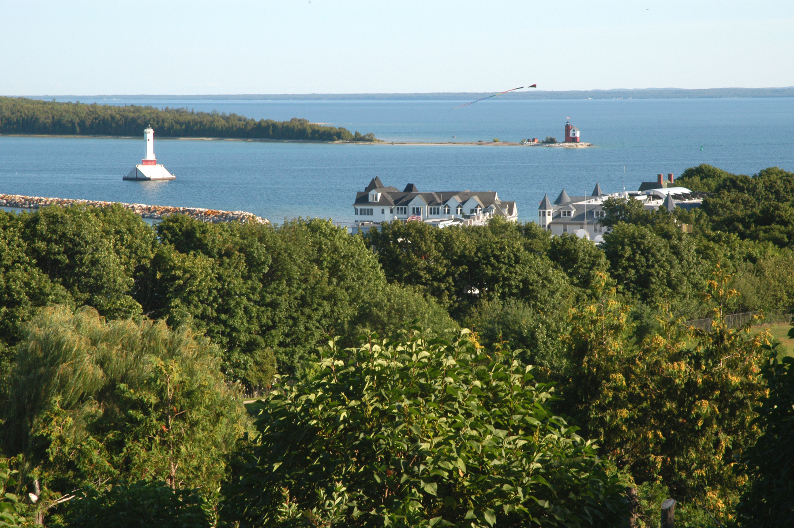
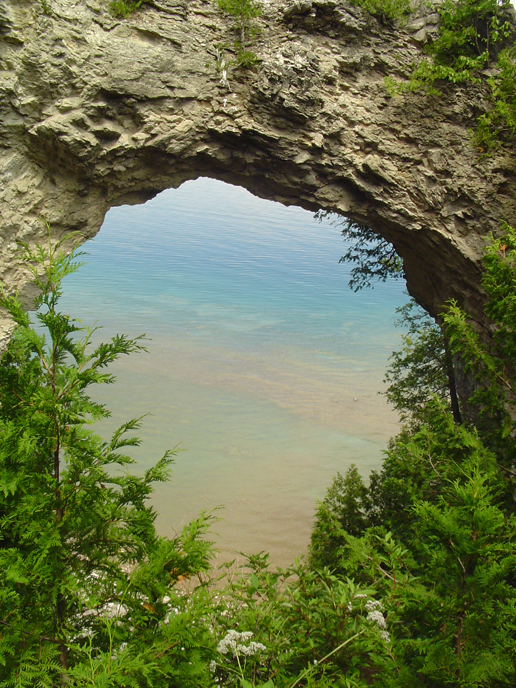

Mackinac Island
Mackinac Island is a small yet adventurous place full of blooming life and gorgeous colors.
Home - Mackinac Island - Activities - Restaurants - How to Prepare - Glossary

Restaurants
- Pink Pony
- The Backyard
- The Chuckwagon
- Millie's on Main
- Seabiscuit
How to Prepare
- Buy ferry tickets in advance
- Book hotel months in advance
- Buy tickets for activities in advance
- Pack
- Bring hiking boots and tennis shoes
- Bring layers, the weather changes quickly
Glossary
- Mackinac
- Pronounced "MACK-in-awe"
- Mitchimakinak
- Meaning "Big Turtle"
- Arch Rock
- One of the most popular sights to see on the island, is a limestone arch rock looking out onto the lake.
